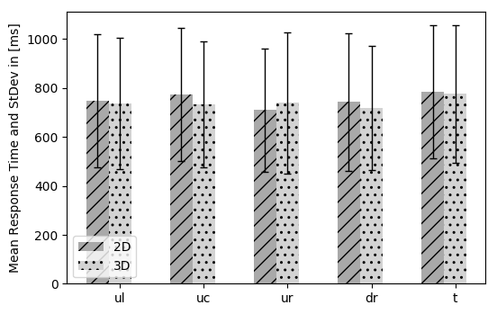
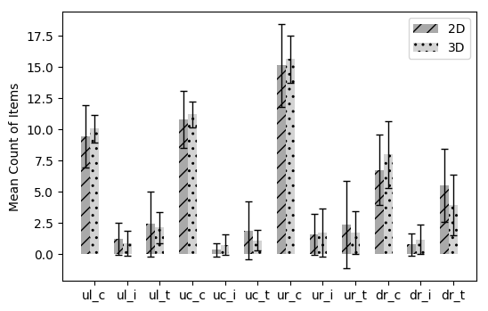
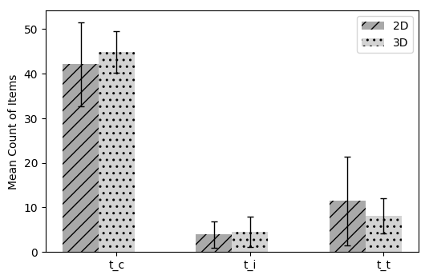
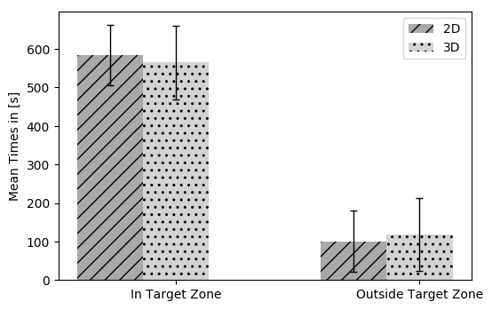
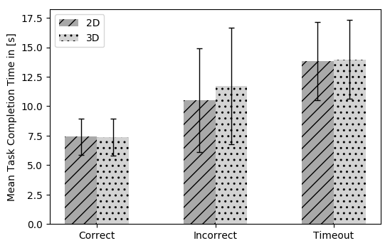
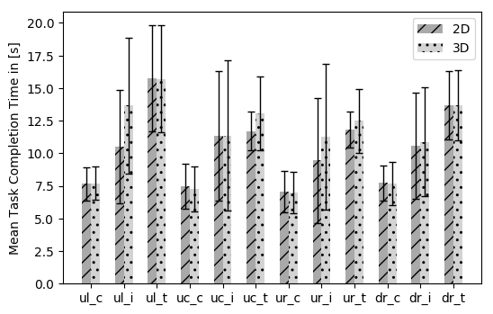
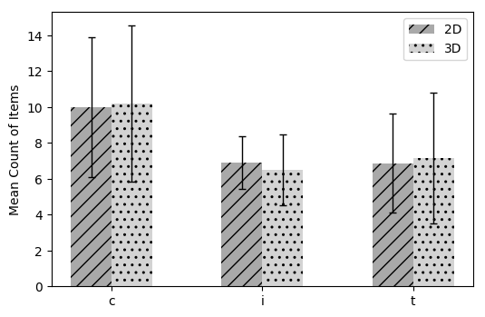
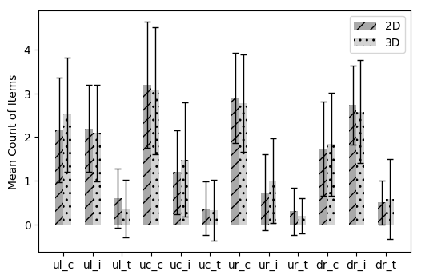
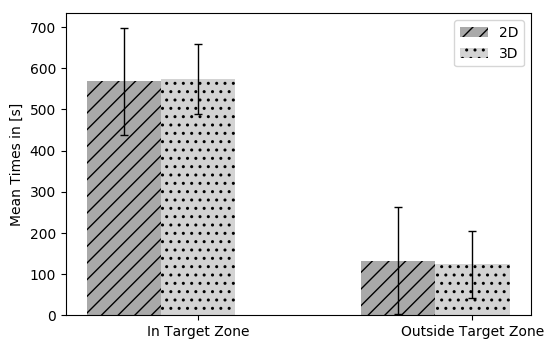

Time in target zone [ms]:
573255.5161290322 [84177.57620842222]
normality = (0.8995352387428284, 0.0070182038471102715)
Time out of target zone [ms]:
123341.19354838709 [81281.80611322535]
normality = (0.9099099636077881, 0.01285726111382246)
Calculating List Selection Performance!
Area response time stats (area, mean, stdev) in [ms] for 3D:
dr_c [7671.561403508772, 1634.668697512302, (0.9504596590995789, 0.020635291934013367), 57]
dr_i [10866.166666666666, 4171.579701489874, (0.9560546875, 0.5276184678077698), 18]
dr_t [13683.7875, 2705.2926358180534, (0.9141035079956055, 5.0624577852431685e-05), 80]
uc_c [7263.768421052631, 1712.9442579684417, (0.9662435054779053, 0.014894255436956882), 95]
uc_i [11355.3, 5772.100254192095, (0.7935022711753845, 0.012087035924196243), 10]
uc_t [13033.869565217392, 2830.36292614919, (0.8447546362876892, 2.251079240522813e-05), 46]
ul_c [7699.98717948718, 1284.8271549182473, (0.9784157276153564, 0.20763665437698364), 78]
ul_i [13657.181818181818, 5211.321901747806, (0.9123227596282959, 0.2597739100456238), 11]
ul_t [15715.646153846154, 4096.707955903317, (0.7956395149230957, 4.324362379293234e-08), 65]
ur_c [6989.3488372093025, 1576.136391287191, (0.9729200005531311, 0.06749263405799866), 86]
ur_i [11275.666666666666, 5594.496104803959, (0.9302037358283997, 0.5816763639450073), 6]
ur_t [12476.677419354839, 2480.0918986615097, (0.8621323704719543, 0.0009289162117056549), 31]
Global response time stats:
correct [7370.316455696203, 1584.5788908863567, NormaltestResult(statistic=29.431924034419236, pvalue=4.0638615153518733e-07), 316]
timeout [13975.472972972973, 3370.9993680042776, NormaltestResult(statistic=35.31115267320493, pvalue=2.149218757176219e-08), 222]
incorrect [11711.711111111112, 4955.882205760518, NormaltestResult(statistic=6.7222702969684498, pvalue=0.034695851639001546), 82]
Global count stats:
CWOT Mean : [10.193548387096774, 4.369739540969688, (0.9148706793785095, 0.017294123768806458)]
EWT Mean : [13.64516129032258, 4.175710614947466, (0.93105149269104, 0.04683368653059006)]
EWOT Mean : [6.483870967741935, 1.9810934311121469, (0.7472844123840332, 6.2813078329782e-06)]
CWT Mean : [17.35483870967742, 2.2442279607439493, (0.708882212638855, 1.5757676692373934e-06)]
Area count stats:
ul_c: 2.5161290322580645 +- 1.3132902127084094; normality = (0.8766114711761475, 0.0019747093319892883)
ul_i: 0.3548387096774194 +- 0.6607262215055085; normality = (0.5825066566467285, 3.1919608289854295e-08)
ul_t: 2.096774193548387 +- 1.106189818240294; normality = (0.8487130999565125, 0.00047570664901286364)
uc_c: 3.064516129032258 +- 1.4591203713417602; normality = (0.9059184193611145, 0.01016180869191885)
uc_i: 0.3225806451612903 +- 0.7017642896867651; normality = (0.5303072929382324, 7.93915866381667e-09)
uc_t: 1.4838709677419355 +- 1.3132902127084094; normality = (0.8814898133277893, 0.002566275652498007)
ur_c: 2.774193548387097 +- 1.1168311546321534; normality = (0.8754399418830872, 0.0018554024863988161)
ur_i: 0.1935483870967742 +- 0.4016096644512494; normality = (0.4847748279571533, 2.555799349934773e-09)
ur_t: 1 +- 0.9660917830792959; normality = (0.8356508612632751, 0.00025438153534196317)
dr_c: 1.8387096774193548 +- 1.185939126980481; normality = (0.79197096824646, 3.678736902656965e-05)
dr_i: 0.5806451612903226 +- 0.9228287507581276; normality = (0.674575924873352, 5.003458909413894e-07)
dr_t: 2.5806451612903225 +- 1.1768373874750666; normality = (0.8923348784446716, 0.0046646492555737495)
########### 2D List #############
Calculating Distance!
Overall distance (mean and stdev) in [m] for 2D and LS:
101.13572987365993 [66.24832551395373]
normality = AndersonResult(statistic=204408.39972567745, critical_values=array([ 0.576, 0.656, 0.787, 0.918, 1.092]), significance_level=array([ 15. , 10. , 5. , 2.5, 1. ]))
Time in target zone [ms]:
568381.1071428572 [129875.21867071437]
normality = (0.74568772315979, 1.3516410945157986e-05)
Time out of target zone [ms]:
132408.14285714287 [130028.06625001995]
normality = (0.744791567325592, 1.3090792890579905e-05)
Calculating List Selection Performance!
Area response time stats (area, mean, stdev) in [ms] for 2D:
dr_c [7716.692307692308, 1330.738974102198, (0.975248396396637, 0.3479531705379486), 52]
dr_i [10569.066666666668, 4074.7303235335476, (0.9839261770248413, 0.989437997341156), 15]
dr_t [13703.146341463415, 2614.224499044832, (0.9135438203811646, 3.879625000990927e-05), 82]
uc_c [7455.604166666667, 1708.6790002446899, (0.9475434422492981, 0.0007644979050382972), 96]
uc_i [11312.181818181818, 4960.057879061127, (0.8518843650817871, 0.0451618917286396), 11]
uc_t [11709.972222222223, 1503.2926620514643, (0.8865357041358948, 0.0014917374355718493), 36]
ul_c [7657.569230769231, 1270.2599139697597, (0.9573267102241516, 0.02492186427116394), 65]
ul_i [10500.611111111111, 4337.015145152372, (0.9034029245376587, 0.06588184088468552), 18]
ul_t [15773.454545454546, 4084.407439111741, (0.775208592414856, 1.129100279939621e-08), 66]
ur_c [7048.149425287356, 1593.7331889034804, (0.9707983136177063, 0.04621082544326782), 87]
ur_i [9434, 4786.536430447386, (0.834130048751831, 0.049673181027173996), 9]
ur_t [11792.772727272728, 1380.7604506495404, (0.922518789768219, 0.0857335776090622), 22]
Global response time stats:
correct [7426.456666666667, 1540.714007736133, NormaltestResult(statistic=19.407684735733863, pvalue=6.1048473130549308e-05), 300]
timeout [13814.106796116504, 3320.824881106798, NormaltestResult(statistic=27.526791249554083, pvalue=1.053496817302428e-06), 206]
incorrect [10507.301886792453, 4383.259340442143, NormaltestResult(statistic=5.8607439851210579, pvalue=0.053377178538294823), 94]
Global count stats:
CWOT Mean : [10, 3.8951782748808106, (0.9390260577201843, 0.08562944829463959)]
EWT Mean : [13.766666666666667, 3.6263721144752474, (0.9251149892807007, 0.03647861257195473)]
EWOT Mean : [6.9, 1.4703975535606828, (0.8801417350769043, 0.0028403757605701685)]
CWT Mean : [16.866666666666667, 1.7167196733251497, (0.8915926218032837, 0.00526329455897212)]
Area count stats:
ul_c: 2.1666666666666665 +- 1.2058287558794354; normality = (0.9163826704025269, 0.02163155935704708)
ul_i: 0.6 +- 0.6746646676632054; normality = (0.7542850971221924, 1.0688776455936022e-05)
ul_t: 2.2 +- 0.9965457582448796; normality = (0.8615376353263855, 0.0010919645428657532)
uc_c: 3.2 +- 1.4479474176011817; normality = (0.9141261577606201, 0.01893669180572033)
uc_i: 0.36666666666666664 +- 0.6149478998583782; normality = (0.6279799938201904, 1.6311086881160008e-07)
uc_t: 1.2 +- 0.9613209303008454; normality = (0.8531138896942139, 0.0007209583418443799)
ur_c: 2.9 +- 1.0288929437289247; normality = (0.8462136387825012, 0.0005171105731278658)
ur_i: 0.3 +- 0.534983080621924; normality = (0.5935052633285522, 6.086469994670551e-08)
ur_t: 0.7333333333333333 +- 0.8683449709106094; normality = (0.7844129204750061, 3.452688179095276e-05)
dr_c: 1.7333333333333334 +- 1.0806553992619585; normality = (0.9130664467811584, 0.017794962972402573)
dr_i: 0.5 +- 0.5085476277156078; normality = (0.6382367610931396, 2.2110947384135216e-07)
dr_t: 2.7333333333333334 +- 0.9071871393197362; normality = (0.8689693212509155, 0.0015891845105215907)
########### 3D Change #############
Calculating Distance!
Overall distance (mean and stdev) in [m] for 3D and CD:
102.76329601129356 [62.484765878148295]
normality = AndersonResult(statistic=193157.82860853896, critical_values=array([ 0.576, 0.656, 0.787, 0.918, 1.092]), significance_level=array([ 15. , 10. , 5. , 2.5, 1. ]))
Time in target zone [ms]:
565107.4516129033 [95624.72814596258]
normality = (0.809741199016571, 7.859925972297788e-05)
Time out of target zone [ms]:
118473.32258064517 [94645.0934802881]
normality = (0.8100032210350037, 7.950545113999397e-05)
Calculating Change Detection Performance!
huh
huh
Overall mean Change Detection Response Time and StDev in [ms]:
[737.154067674586, 269.4536031631003]
normality = (0.828052282333374, 3.3189373422766505e-36)
Area Mean Change Detection Response Time, StDev in [ms] and normality:
ul : [733.6559485530547, 257.49769924744254, (0.8488635420799255, 8.678761119805135e-17)]
uc : [738.6023054755043, 289.9380695191977, (0.8035491704940796, 3.3566724301111905e-20)]
ur : [718.9214876033058, 253.28143340219606, (0.8159189224243164, 4.05136651935112e-23)]
dr : [775.251012145749, 282.4562016357002, (0.8527573347091675, 1.3361318785588567e-14)]
Overall Stats about correct, incorrent and missed values (mean + stdev):
Correct : [44.806451612903224, 4.672039917343099, (0.8978675603866577, 0.0063792322762310505)]
Wrong : [4.548387096774194, 3.3944926933433353, (0.8714812994003296, 0.0015056756092235446)]
Missed : [8.064516129032258, 3.9575706678968916, (0.9524140954017639, 0.18192709982395172)]
Area Stats about correct, incorrent and missed values (mean + stdev):
Upper left:
ulc : [10.03225806451613, 1.1100711979490905, (0.898751974105835, 0.0067100790329277515)]
ulw : [0.8387096774193549, 1.003220620254202, (0.776513934135437, 1.9534589227987453e-05)]
ulm : [2.129032258064516, 1.2313119150962784, (0.9052721858024597, 0.009784713387489319)]
Upper center:
ucc : [11.193548387096774, 1.046242637208969, (0.7677202224731445, 1.3771807061857544e-05)]
ucw : [0.7419354838709677, 0.8151785872017604, (0.7967739701271057, 4.501100556808524e-05)]
ucm : [1.096774193548387, 0.8308565343337929, (0.8472175002098083, 0.0004422582278493792)]
Upper right:
urc : [15.612903225806452, 1.8739871816501967, (0.8472752571105957, 0.0004435025330167264)]
urw : [1.7419354838709677, 1.931626981510386, (0.7932243347167969, 3.8766764191677794e-05)]
urm : [1.7419354838709677, 1.7120697403140224, (0.8405779004096985, 0.0003212176961824298)]
Lower right:
drc : [7.967741935483871, 2.6518405051051106, (0.9146206378936768, 0.017035776749253273)]
drw : [1.1612903225806452, 1.185939126980481, (0.8066809177398682, 6.879128341097385e-05)]
drm : [3.935483870967742, 2.4349604222788748, (0.9381276369094849, 0.07325073331594467)]
########### 2D Change #############
Calculating Distance!
Overall distance (mean and stdev) in [m] for 2D and CD:
95.3369959991916 [52.40078590918611]
normality = AndersonResult(statistic=172476.35917953774, critical_values=array([ 0.576, 0.656, 0.787, 0.918, 1.092]), significance_level=array([ 15. , 10. , 5. , 2.5, 1. ]))
Time in target zone [ms]:
583861.6666666666 [79318.72420693673]
normality = (0.8658891916275024, 0.0013588673900812864)
Time out of target zone [ms]:
100258.56666666667 [79188.24686768967]
normality = (0.8666608929634094, 0.0014130360214039683)
Calculating Change Detection Performance!
Overall mean Change Detection Response Time and StDev in [ms]:
[747.0079239302694, 271.48597158646703]
normality = (0.8200827836990356, 2.2254352291003263e-35)
Area Mean Change Detection Response Time, StDev in [ms] and normality:
ul : [772.0388692579505, 271.9813991113118, (0.8339778184890747, 9.685706608311657e-17)]
uc : [709.2283950617284, 253.35075295121112, (0.8073264360427856, 2.484330211805211e-19)]
ur : [742.0772626931567, 280.83023363495613, (0.7970505952835083, 2.1943699624322193e-23)]
dr : [783.5940594059406, 271.17047485335763, (0.8508353233337402, 3.9782939312629773e-13)]
Overall Stats about correct, incorrent and missed values (mean + stdev):
Correct : [42.06666666666667, 9.461112179768344, (0.7028828859329224, 1.718878138490254e-06)]
Wrong : [3.9, 2.9751847233291304, (0.9432573318481445, 0.11133518069982529)]
Missed : [11.433333333333334, 9.947043689504914, (0.6071835160255432, 8.941100304582505e-08)]
Area Stats about correct, incorrent and missed values (mean + stdev):
Upper left:
ulc : [9.433333333333334, 2.514555329625325, (0.7983623147010803, 6.12151634413749e-05)]
ulw : [1.2, 1.2972118642263704, (0.8366034030914307, 0.0003291467437520623)]
ulm : [2.4, 2.6076809620810595, (0.7042512893676758, 1.8001020407609758e-06)]
Upper center:
ucc : [10.8, 2.280350850198276, (0.5598087906837463, 2.4410981680489385e-08)]
ucw : [0.3333333333333333, 0.546672273590534, (0.6231926679611206, 1.4177098250911513e-07)]
ucm : [1.8666666666666667, 2.315365962484092, (0.4733778238296509, 2.83457546323973e-09)]
Upper right:
urc : [15.1, 3.3254504491354506, (0.6547106504440308, 3.645397441687237e-07)]
urw : [1.6, 1.6315848018160874, (0.8596907258033752, 0.000996051705442369)]
urm : [2.3333333333333335, 3.497125256188469, (0.5556461811065674, 2.1874354771966864e-08)]
Lower right:
drc : [6.733333333333333, 2.815392829004364, (0.9769157767295837, 0.7389769554138184)]
drw : [0.7666666666666667, 0.8976341829703132, (0.7802196145057678, 2.917886376962997e-05)]
drm : [5.5, 2.897680404071148, (0.9620680809020996, 0.34948110580444336)]
######################################################
######################################################
############# Statistic Change Detection #############
######################################################
######################################################
######################################################
Statistics for Overall Response Time:
MannwhitneyuResult(statistic=896688.0, pvalue=0.30397093448935375)
Mean l1 : 747.0079239302694 StDev l1: 271.48597158646703
Mean l2 : 737.154067674586 StDev l2: 269.4536031631003
Mann-Whitney:If P <= 0.05, we are confident that the distributions significantly differ
Shapiro :If P > 0.05, it may be assumed that the data have a normal distribution.
######################################################
Statistics for Area Response Time (ul):
MannwhitneyuResult(statistic=48189.5, pvalue=0.045224579335671304)
Mean l1 : 772.0388692579505 StDev l1: 271.9813991113118
Mean l2 : 733.6559485530547 StDev l2: 257.49769924744254
Statistics for Area Response Time (uc):
MannwhitneyuResult(statistic=53855.0, pvalue=0.34713171591985958)
Mean l1 : 709.2283950617284 StDev l1: 253.35075295121112
Mean l2 : 738.6023054755043 StDev l2: 289.9380695191977
Statistics for Area Response Time (ur):
MannwhitneyuResult(statistic=112129.0, pvalue=0.5454136330288657)
Mean l1 : 742.0772626931567 StDev l1: 280.83023363495613
Mean l2 : 718.9214876033058 StDev l2: 253.28143340219606
Statistics for Area Response Time (dr):
MannwhitneyuResult(statistic=26053.5, pvalue=0.41867093107269748)
Mean l1 : 783.5940594059406 StDev l1: 271.17047485335763
Mean l2 : 775.251012145749 StDev l2: 282.4562016357002
######################################################
Statistics for Area Count (Correct, Incorrect, Missed):
UL:
Correct:
MannwhitneyuResult(statistic=438.0, pvalue=0.69442575068549117)
Mean l1 : 9.433333333333334 StDev l1: 2.514555329625325
Mean l2 : 10.03225806451613 StDev l2: 1.1100711979490905
Incorrect:
MannwhitneyuResult(statistic=533.0, pvalue=0.30012941900549883)
Mean l1 : 1.2 StDev l1: 1.2972118642263704
Mean l2 : 0.8387096774193549 StDev l2: 1.003220620254202
Missed:
MannwhitneyuResult(statistic=433.5, pvalue=0.64352907242458302)
Mean l1 : 2.4 StDev l1: 2.6076809620810595
Mean l2 : 2.129032258064516 StDev l2: 1.2313119150962784
UC:
Correct:
MannwhitneyuResult(statistic=435.0, pvalue=0.64919138010737654)
Mean l1 : 10.8 StDev l1: 2.280350850198276
Mean l2 : 11.193548387096774 StDev l2: 1.046242637208969
Incorrect:
MannwhitneyuResult(statistic=335.0, pvalue=0.033886003708553318)
Mean l1 : 0.3333333333333333 StDev l1: 0.546672273590534
Mean l2 : 0.7419354838709677 StDev l2: 0.8151785872017604
Missed:
MannwhitneyuResult(statistic=564.5, pvalue=0.10777599822127144)
Mean l1 : 1.8666666666666667 StDev l1: 2.315365962484092
Mean l2 : 1.096774193548387 StDev l2: 0.8308565343337929
UR:
Correct:
MannwhitneyuResult(statistic=441.0, pvalue=0.72927902501562936)
Mean l1 : 15.1 StDev l1: 3.3254504491354506
Mean l2 : 15.612903225806452 StDev l2: 1.8739871816501967
Incorrect:
MannwhitneyuResult(statistic=454.5, pvalue=0.88203614938699904)
Mean l1 : 1.6 StDev l1: 1.6315848018160874
Mean l2 : 1.7419354838709677 StDev l2: 1.931626981510386
Missed:
MannwhitneyuResult(statistic=489.5, pvalue=0.72211736082039912)
Mean l1 : 2.3333333333333335 StDev l1: 3.497125256188469
Mean l2 : 1.7419354838709677 StDev l2: 1.7120697403140224
DR:
Correct:
MannwhitneyuResult(statistic=344.5, pvalue=0.081078695385596158)
Mean l1 : 6.733333333333333 StDev l1: 2.815392829004364
Mean l2 : 7.967741935483871 StDev l2: 2.6518405051051106
Incorrect:
MannwhitneyuResult(statistic=373.5, pvalue=0.16323148168088542)
Mean l1 : 0.7666666666666667 StDev l1: 0.8976341829703132
Mean l2 : 1.1612903225806452 StDev l2: 1.185939126980481
Missed:
MannwhitneyuResult(statistic=612.0, pvalue=0.033208494643384698)
Mean l1 : 5.5 StDev l1: 2.897680404071148
Mean l2 : 3.935483870967742 StDev l2: 2.4349604222788748
######################################################
Statistics for Overall Count (Correct, Incorrect, Missed):
Correct:
MannwhitneyuResult(statistic=375.5, pvalue=0.1977059957963998)
Mean l1 : 42.06666666666667 StDev l1: 9.461112179768344
Mean l2 : 44.806451612903224 StDev l2: 4.672039917343099
Incorrect:
MannwhitneyuResult(statistic=419.5, pvalue=0.51346362020796987)
Mean l1 : 3.9 StDev l1: 2.9751847233291304
Mean l2 : 4.548387096774194 StDev l2: 3.3944926933433353
Missed:
MannwhitneyuResult(statistic=577.5, pvalue=0.10449508686724833)
Mean l1 : 11.433333333333334 StDev l1: 9.947043689504914
Mean l2 : 8.064516129032258 StDev l2: 3.9575706678968916
######################################################
Statistics for Overall Distance:
in [m]:
MannwhitneyuResult(statistic=351.0, pvalue=0.10155134312666755)
Mean l1 : 95.43948643529824 StDev l1: 19.979412513535003
Mean l2 : 102.81599150616482 StDev l2: 25.082905050579242
in [ms]:
In Target Zone:
Ttest_indResult(statistic=0.83224326932241477, pvalue=0.40862768072369504); t-test: 0.578832967641
Mean l1 : 583861.6666666666 StDev l1: 79318.72420693673
Mean l2 : 565107.4516129033 StDev l2: 95624.72814596258
Outside Target Zone:
Ttest_indResult(statistic=-0.81383868755480004, pvalue=0.4190098560401041); t-test: 0.607124856265
Mean l1 : 100258.56666666667 StDev l1: 79188.24686768967
Mean l2 : 118473.32258064517 StDev l2: 94645.0934802881
######################################################
######################################################
############# Statistic List Selection #############
######################################################
######################################################
######################################################
Statistics for Global Task Completion Time:
Correct
MannwhitneyuResult(statistic=48273.5, pvalue=0.69253226050943506)
Mean l1 : 7426.456666666667 StDev l1: 1540.714007736133
Mean l2 : 7370.316455696203 StDev l2: 1584.5788908863567
Incorrect
MannwhitneyuResult(statistic=1046.5, pvalue=0.29926933211722873)
Mean l1 : 10507.301886792453 StDev l1: 4383.259340442143
Mean l2 : 11711.711111111112 StDev l2: 4955.882205760518
Timeout
MannwhitneyuResult(statistic=22304.5, pvalue=0.66020439952100385)
Mean l1 : 13814.106796116504 StDev l1: 3320.824881106798
Mean l2 : 13975.472972972973 StDev l2: 3370.9993680042776
######################################################
Statistics for Area Task Completion Time:
UL:
Correct:
Ttest_indResult(statistic=-0.19759442996850368, pvalue=0.84364696486532353); t-test: 0.559510040359
Mean l1 : 7657.569230769231 StDev l1: 1270.2599139697597
Mean l2 : 7699.98717948718 StDev l2: 1284.8271549182473
Incorrect:
MannwhitneyuResult(statistic=61.0, pvalue=0.091091769133344852)
Mean l1 : 10500.611111111111 StDev l1: 4337.015145152372
Mean l2 : 13657.181818181818 StDev l2: 5211.321901747806
Missed:
MannwhitneyuResult(statistic=2179.5, pvalue=0.87021272450572495)
Mean l1 : 15773.454545454546 StDev l1: 4084.407439111741
Mean l2 : 15715.646153846154 StDev l2: 4096.707955903317
UC:
Correct:
MannwhitneyuResult(statistic=4911.5, pvalue=0.35816219726234055)
Mean l1 : 7455.604166666667 StDev l1: 1708.6790002446899
Mean l2 : 7263.768421052631 StDev l2: 1712.9442579684417
Incorrect:
MannwhitneyuResult(statistic=58.0, pvalue=0.86007886520467647)
Mean l1 : 11312.181818181818 StDev l1: 4960.057879061127
Mean l2 : 11355.3 StDev l2: 5772.100254192095
Missed:
MannwhitneyuResult(statistic=610.5, pvalue=0.042592615581849368)
Mean l1 : 11709.972222222223 StDev l1: 1503.2926620514643
Mean l2 : 13033.869565217392 StDev l2: 2830.36292614919
UR:
Correct:
Ttest_indResult(statistic=0.24396935721941565, pvalue=0.80754701462473677); t-test: 0.864929863587
Mean l1 : 7048.149425287356 StDev l1: 1593.7331889034804
Mean l2 : 6989.3488372093025 StDev l2: 1576.136391287191
Incorrect:
MannwhitneyuResult(statistic=22.5, pvalue=0.63705100374083212)
Mean l1 : 9434 StDev l1: 4786.536430447386
Mean l2 : 11275.666666666666 StDev l2: 5594.496104803959
Missed:
MannwhitneyuResult(statistic=319.5, pvalue=0.70462927862691993)
Mean l1 : 11792.772727272728 StDev l1: 1380.7604506495404
Mean l2 : 12476.677419354839 StDev l2: 2480.0918986615097
DR:
Correct:
Ttest_indResult(statistic=0.15715480820230751, pvalue=0.87541900890786639); t-test: 0.0637796662237
Mean l1 : 7716.692307692308 StDev l1: 1330.738974102198
Mean l2 : 7671.561403508772 StDev l2: 1634.668697512302
Incorrect:
Ttest_indResult(statistic=-0.20586142397396021, pvalue=0.83824514139604323); t-test: 0.948629085166
Mean l1 : 10569.066666666668 StDev l1: 4074.7303235335476
Mean l2 : 10866.166666666666 StDev l2: 4171.579701489874
Missed:
MannwhitneyuResult(statistic=3332.5, pvalue=0.86170207285543154)
Mean l1 : 13703.146341463415 StDev l1: 2614.224499044832
Mean l2 : 13683.7875 StDev l2: 2705.2926358180534
######################################################
Statistics for Global Count:
Correct without timeout:
MannwhitneyuResult(statistic=448.0, pvalue=0.8111140018875993)
Mean l1 : 10 StDev l1: 3.8951782748808106
Mean l2 : 10.193548387096774 StDev l2: 4.369739540969688
Correct with timeout:
Error without timeout:
MannwhitneyuResult(statistic=579.0, pvalue=0.092273101582113132)
Mean l1 : 6.9 StDev l1: 1.4703975535606828
Mean l2 : 6.483870967741935 StDev l2: 1.9810934311121469
Error with timeout:
Ttest_indResult(statistic=-0.35383122563792718, pvalue=0.72472670755922719); t-test: 0.0517479388255
Mean l1 : 6.866666666666666 StDev l1: 2.7759227522459593
Mean l2 : 7.161290322580645 StDev l2: 3.652367033341058
######################################################
Statistics for Area Count:
ul
correct:
MannwhitneyuResult(statistic=391.0, pvalue=0.27671730127624594)
Mean l1 : 2.1666666666666665 StDev l1: 1.2058287558794354
Mean l2 : 2.5161290322580645 StDev l2: 1.3132902127084094
timeout:
MannwhitneyuResult(statistic=500.0, pvalue=0.60318632205504352)
Mean l1 : 2.2 StDev l1: 0.9965457582448796
Mean l2 : 2.096774193548387 StDev l2: 1.106189818240294
incorrect:
MannwhitneyuResult(statistic=567.0, pvalue=0.087829369670474125)
Mean l1 : 0.6 StDev l1: 0.6746646676632054
Mean l2 : 0.3548387096774194 StDev l2: 0.6607262215055085
uc
correct:
MannwhitneyuResult(statistic=489.5, pvalue=0.72339400624684358)
Mean l1 : 3.2 StDev l1: 1.4479474176011817
Mean l2 : 3.064516129032258 StDev l2: 1.4591203713417602
timeout:
MannwhitneyuResult(statistic=422.0, pvalue=0.52486907878689371)
Mean l1 : 1.2 StDev l1: 0.9613209303008454
Mean l2 : 1.4838709677419355 StDev l2: 1.3132902127084094
incorrect:
MannwhitneyuResult(statistic=496.5, pvalue=0.56073454189968541)
Mean l1 : 0.36666666666666664 StDev l1: 0.6149478998583782
Mean l2 : 0.3225806451612903 StDev l2: 0.7017642896867651
ur
correct:
MannwhitneyuResult(statistic=489.5, pvalue=0.71794595658924587)
Mean l1 : 2.9 StDev l1: 1.0288929437289247
Mean l2 : 2.774193548387097 StDev l2: 1.1168311546321534
timeout:
MannwhitneyuResult(statistic=392.5, pvalue=0.26745571084899245)
Mean l1 : 0.7333333333333333 StDev l1: 0.8683449709106094
Mean l2 : 1 StDev l2: 0.9660917830792959
incorrect:
MannwhitneyuResult(statistic=502.0, pvalue=0.47078039471097932)
Mean l1 : 0.3 StDev l1: 0.534983080621924
Mean l2 : 0.1935483870967742 StDev l2: 0.4016096644512494
dr
correct:
MannwhitneyuResult(statistic=434.0, pvalue=0.64694895117257634)
Mean l1 : 1.7333333333333334 StDev l1: 1.0806553992619585
Mean l2 : 1.8387096774193548 StDev l2: 1.185939126980481
timeout:
MannwhitneyuResult(statistic=508.0, pvalue=0.51899889447025616)
Mean l1 : 2.7333333333333334 StDev l1: 0.9071871393197362
Mean l2 : 2.5806451612903225 StDev l2: 1.1768373874750666
incorrect:
MannwhitneyuResult(statistic=495.0, pvalue=0.62776598467864864)
Mean l1 : 0.5 StDev l1: 0.5085476277156078
Mean l2 : 0.5806451612903226 StDev l2: 0.9228287507581276
######################################################
Statistics for Overall Distance:
in [m]:
MannwhitneyuResult(statistic=385.0, pvalue=0.46160789813717784)
Mean l1 : 101.19648168393861 StDev l1: 33.19378755254389
Mean l2 : 96.82092474618925 StDev l2: 18.829555554660114
in [ms]:
In Target Zone:
MannwhitneyuResult(statistic=491.0, pvalue=0.3910928567621802)
Mean l1 : 568381.1071428572 StDev l1: 129875.21867071437
Mean l2 : 573255.5161290322 StDev l2: 84177.57620842222
Outside Target Zone:
MannwhitneyuResult(statistic=394.0, pvalue=0.54878149214815974)
Mean l1 : 132408.14285714287 StDev l1: 130028.06625001995
Mean l2 : 123341.19354838709 StDev l2: 81281.80611322535









In [2]: